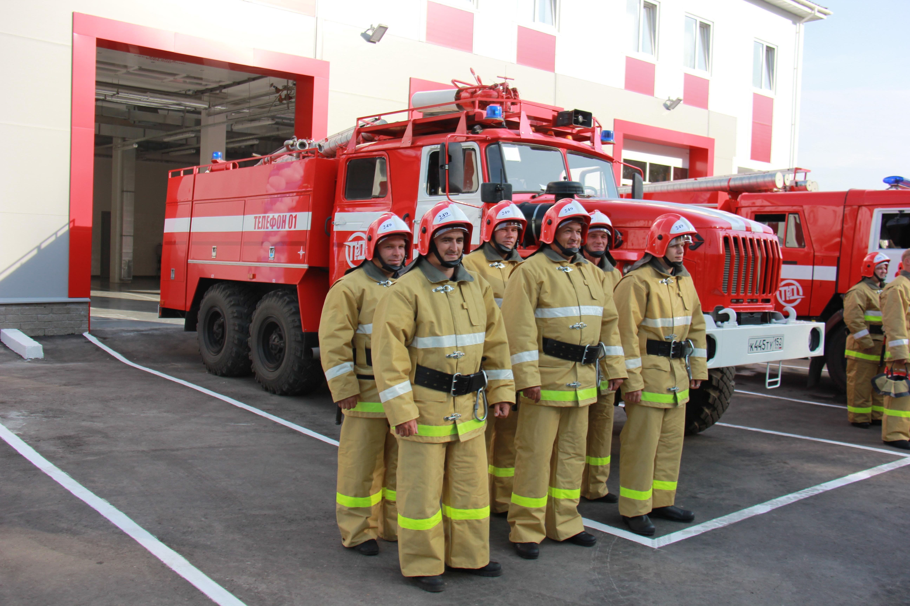

Правила нахождения на рабочем месте.
В данном курсе мы с вами разберём правила находжения на рабочем месте, а конкретно поведение и внешний вид во время работы. Помимо этого освоим базовую техникубезопасности.
Начнём требований к внешнему виду сотрудника:
1. Одежда должна быть чистой, опртяной.
2. Так же, в связи с эпидемологической ситуацией должна быть надета маска, а на руках резиновые перчатки.
3. Помимо чистой и опрятной одежды должен быть надет фартук. Тоже чистый и опрятный.
4. Для того чтобы посетители знали как к вам обращатся на фартуке должен бэйджик с ваши именем.
О поведении.
Вести себя в магазине нужно прилично, спокойно, не кричать, продукты не бросать.
Бесприкословно выполнять поручения начальства или старшего смены, не спорить и не уклоняться от работы.

Что касается основы техники безопасности.
1. Не стоит перегружать себя.
Не нужно пытаться утащить максимум товара, цените своё здоровье, оно у вас одно. Вместо того чтобы пытаться вынести все коробки за раз, лучше аккуратно берите по одной, если вам не по силу утащить коробку или кегу, то позовите сотрудника посильнее. В противном случае это может привести к травмам спины и суставов.
Для избежания травм нужно знать элементарные правила подъёма тяжелого груза:
1. Ноги на ширине плеч, спина ровно.
2. Опускаемся не сгибая спины и берём коробку.
3. За счёт ног поднимаемся, без резких движений.
4. Спокойно и аккуратно несём коробку до нужного места.
5. По тому же принципу опускаем коробку (Бросать коробки с товаром не приветствуется).
При соблюдении данных правил, риск получить травму минимален.
2. Действия при пожаре.
Сейчас мы разберём правила поведения при пожаре:
1. Не паниковать. Паника вам никак не поможет.
2. При возможности обесточить всю электрику в магазине с помощью электрощитка.
3. Спокойно, но быстро вывести всех посетителей и персонал. Убедиться что в магазине никого не осталось.
4. Вызвать пожарных "101" и дождаться их приезда.
Если пожар небольшой, например тлеет коробка, можно попытаться потушить его самостоятельно. И иных случаях рисковать не стоит, это опасно для жизни.
В магазинах есть огнетушители. Тушить пожар нужно только при помощи них. Подручные средства использовать не рекомендуется.

На этом курс подходит к концу. Для закрепления прочитанного материала необходимо пройти тестирование
Перейти к тестированию